Property Grid (Non-Tabbed View)
The Property Grid allows you to access and customize report/report element settings.
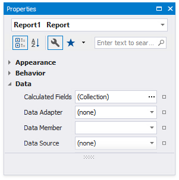
See the Property Grid (Tabbed View) topic if your Property Grid arranges properties in tabs.
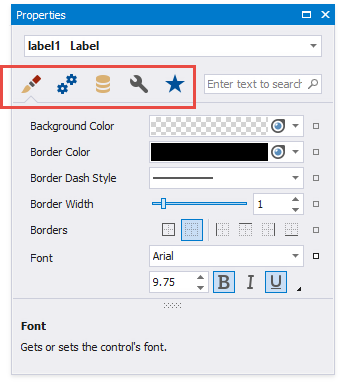
Select a Report Element
Perform one of the following actions to select an element and show its properties in the Property Grid:
Select an element in the drop-down list at the top of the Property Grid.

Click an element in the design surface.
Select an element in the Report Explorer.
Categorized and Alphabetical Modes
You can switch between categorized and alphabetical modes.
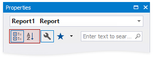
In the categorized mode, properties are listed in a tree-like form.
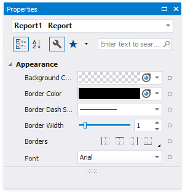
In the alphabetical mode, all properties are displayed in a single list and are sorted alphabetically by name.
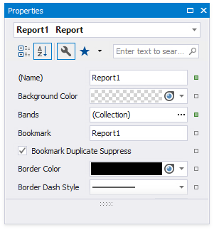
Favorite Properties
The Favorites tab displays favorite or most frequently used properties.
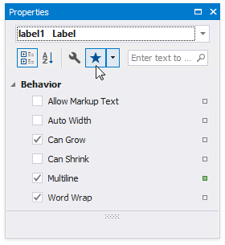
Click the Edit Favorite Property List context menu item to set up the favorite properties. Enable check boxes for the controls' properties in the invoked Favorite Properties Editor to include these properties into the favorite list.

Change Property Values
The Property Grid adds a green property marker to properties if their default value changes.
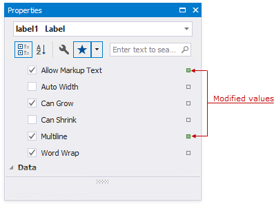
Right-click a property's editor to reset the value.
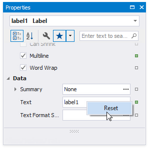
Set Color Properties
You can use the Magnifier to set color properties.
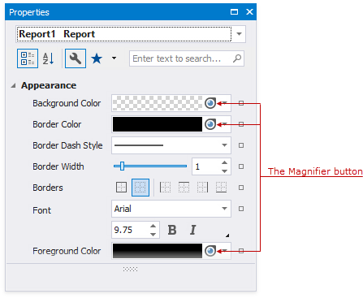
Do the following to use the Magnifier:
Click the Magnifier button.
Move the invoked Magnifier on the screen to find the color you want to set.
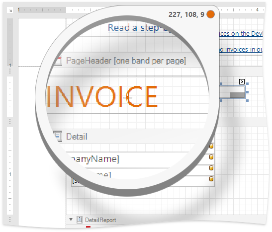
You can use the Magnifier to zoom out. Use one of the following options to do this:
- Hold Ctrl and press + / -
- Scroll the mouse wheel
Click to set the color property to the selected color.
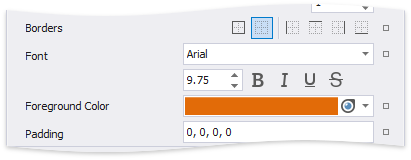
Right click or press Esc to cancel the Magnifier mode.
Specify Expressions
If expression bindings are enabled, the Property Grid allows you to specify expressions that can include two or more data fields and various functions. Click a property's marker to see whether the invoked context menu has the PropertyName Expression item.
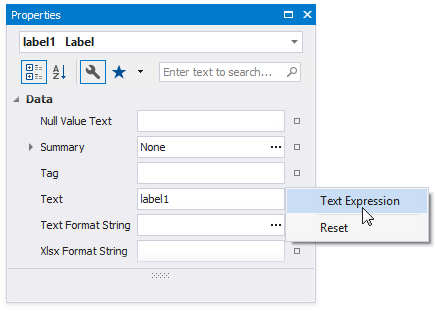
Click this item to specify an expression in the invoked Expression Editor.
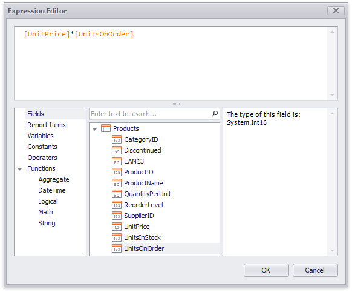
The Property Grid highlights properties that have an assigned expression.

Click a property's marker and choose Reset to reset the property value.
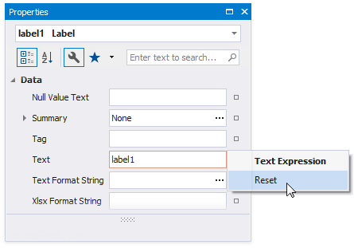
Note
The Reset command resets both the expression and the value you specified using the property editor.
Search Properties
The Property Grid's search box allows you to search for a property. When you type within the search box, the Property Grid automatically creates a search criteria based on the entered text and filters the list of available properties.
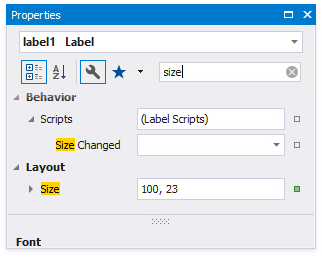